Alejandra Lopez
Constructor
18 años de experiencia
Saber mas
Aprendé lutheria y descubrí como una idea, trazada en papel, se transforma con tus manos en un instrumento que suena y perdura.
Seis etapas, un mismo objetivo: convertir madera en un instrumento vivo. Pasa el cursor sobre cada fase para conocerla.
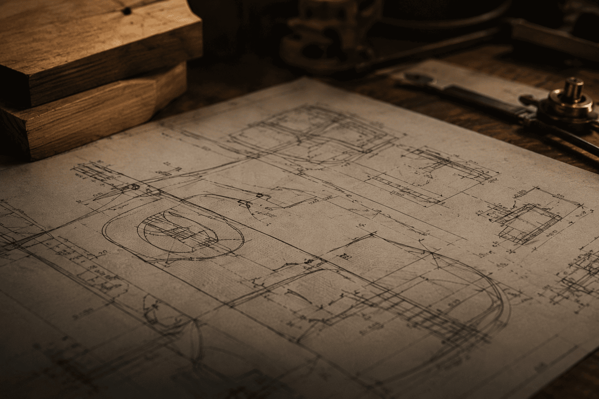
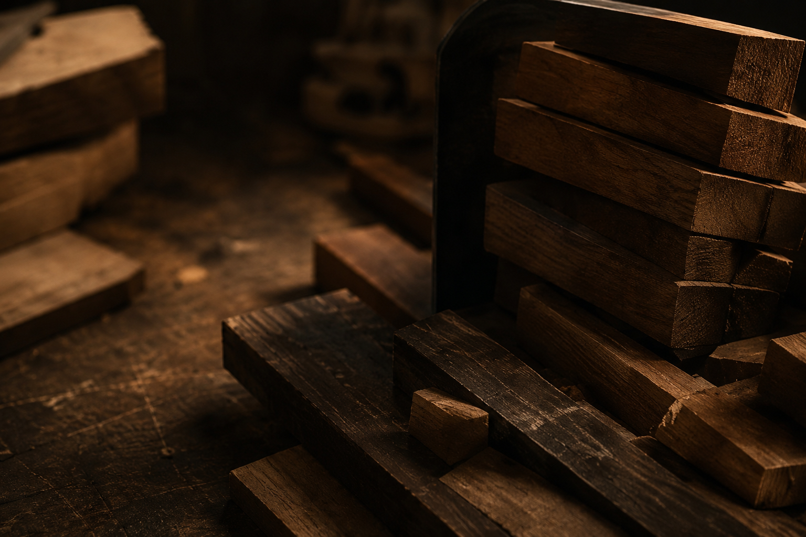

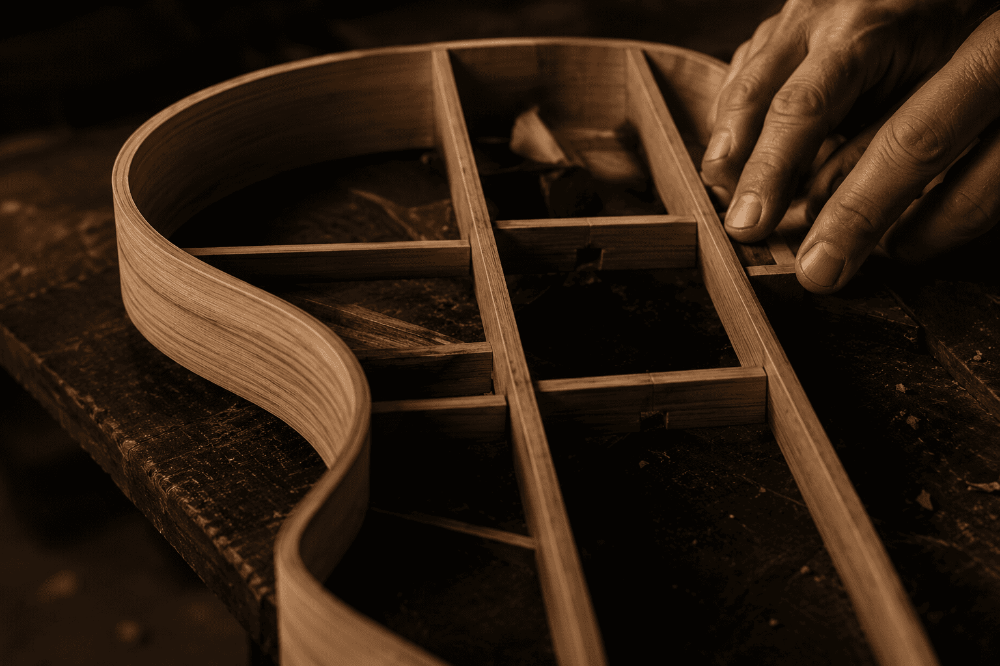
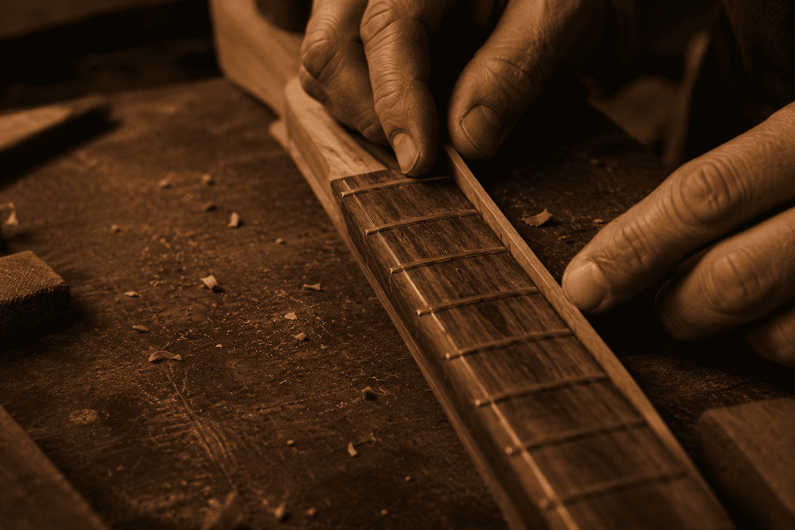
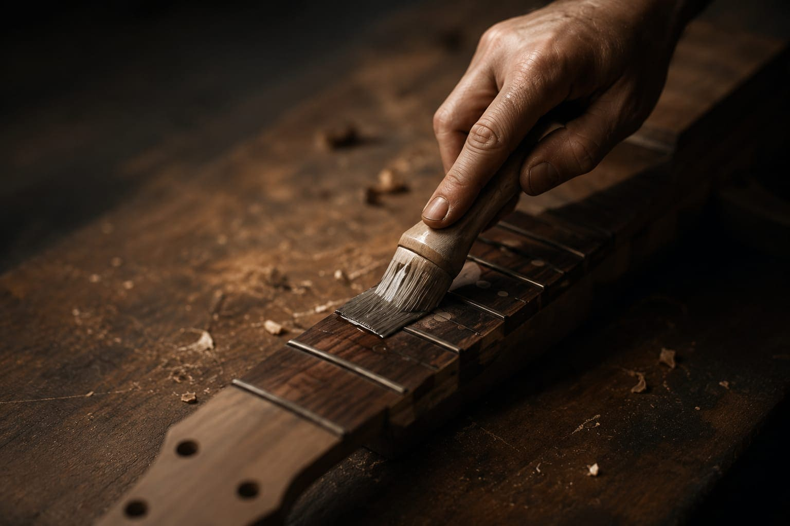
Desde tu primera herramienta hasta tu propia guitarra terminada.
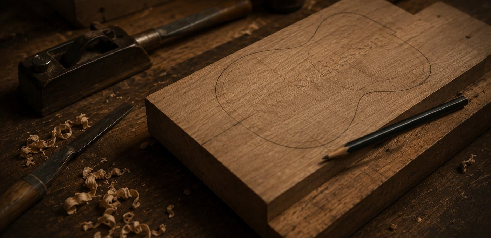
PrincipianteDescubri el mundo de la lutheria desde cero, con las herramientas y tecnicas basicas.
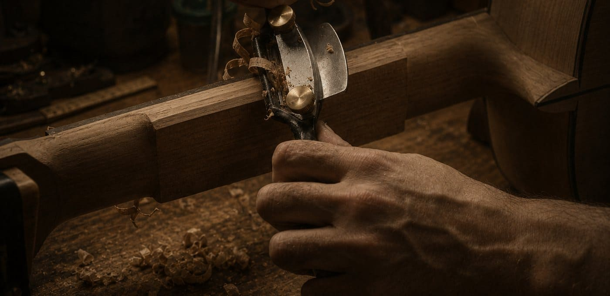
IntermedioEl proceso completo de construccion, desde la seleccion de maderas hasta el armado final.
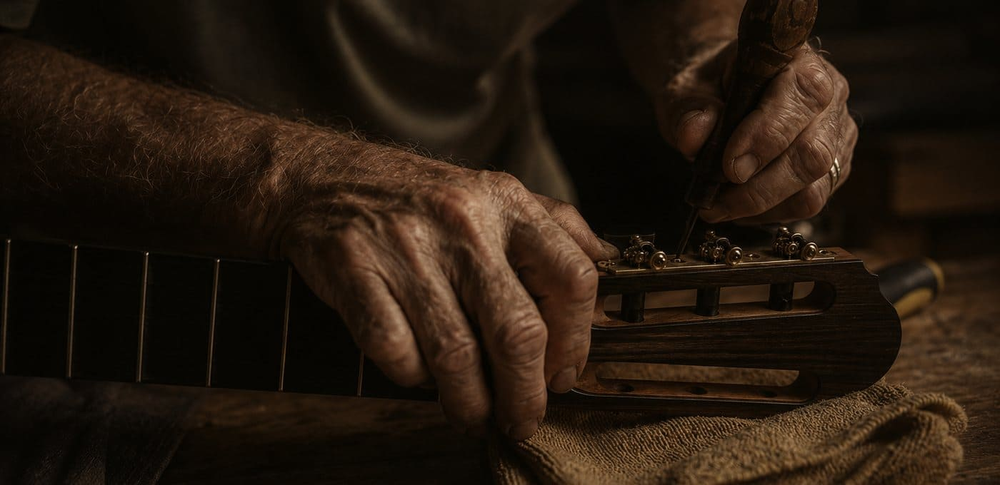
MedioTecnicas especificas para construir bajos electricos de cuerpo solido con precision.
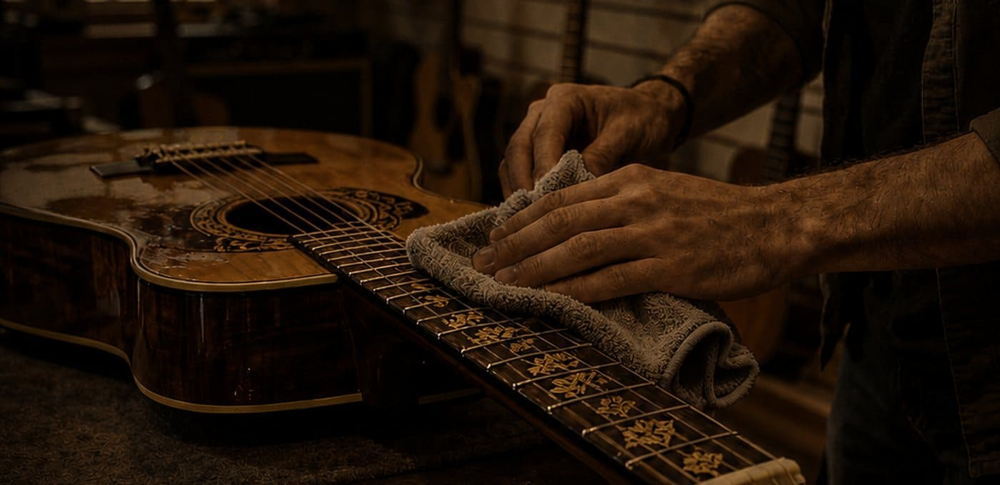
AvanzadoTecnicas avanzadas de acabado y personalizacion para llevar tu nivel mas alla.
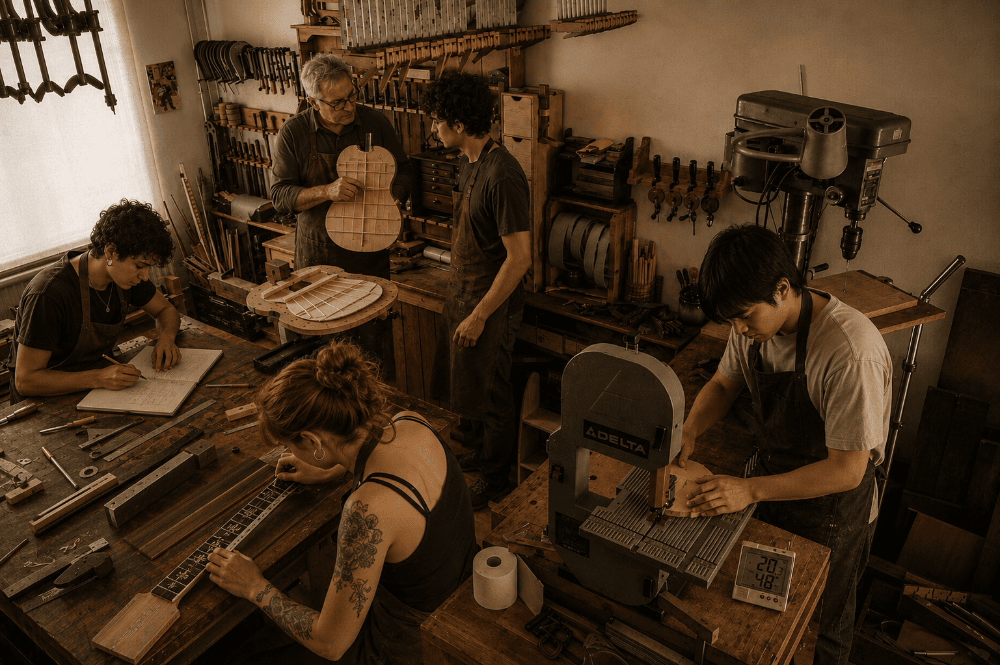
Un espacio equipado con herramientas profesionales, bancos individuales y la guia constante de luthiers con oficio. Aca no hay atajos: se aprende haciendo, con las manos en la madera desde el primer dia.
Cada alumno cuenta con su propio puesto de trabajo, acceso a maderas seleccionadas y acompañamiento personalizado durante todo el curso.
Luthiers profesionales con años de experiencia en la construccion y enseñanza de instrumentos.
Una madera icónica de veta profunda y densidad media-alta, elegida por su calidez y graves envolventes. Aporta riqueza armónica y una definición excepcional en cada nota.
Conocer más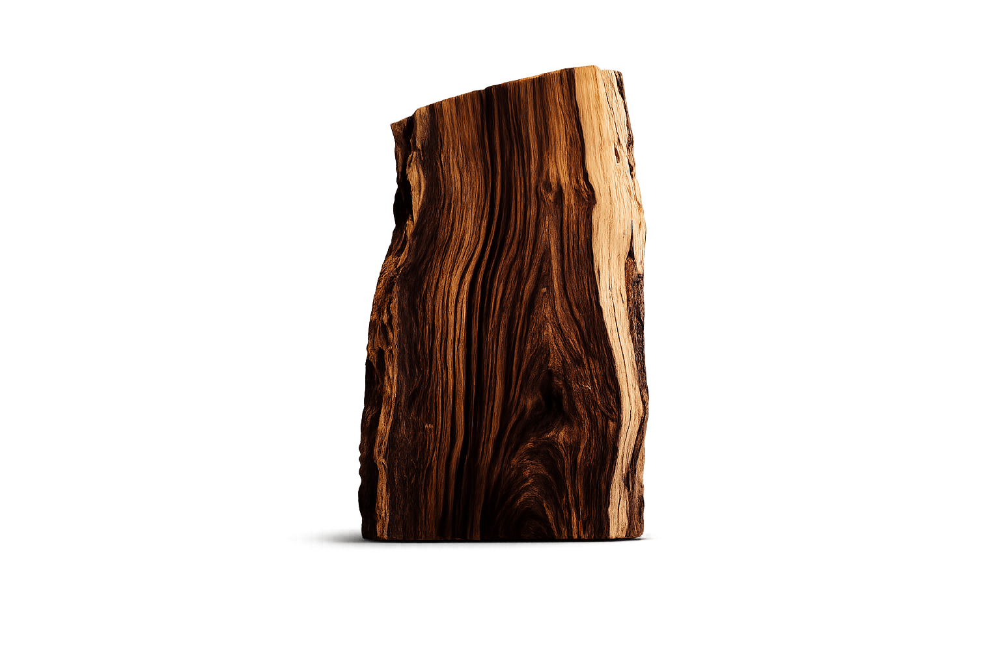
“Cada filete de nacar me recordó que la paciencia también se talla.”
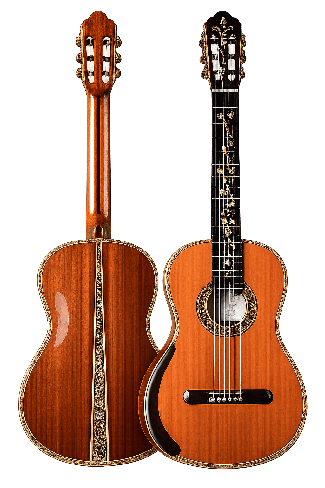
Nunca pense que podria construir mi propia guitarra. Hoy es mi mayor orgullo.
Los cursos son claros, completos y te acompañan en todo el proceso.
La comunidad y el taller son increibles. Se aprende haciendo, de verdad.
Contanos que queres construir y te ayudamos a elegir el curso correcto para empezar.